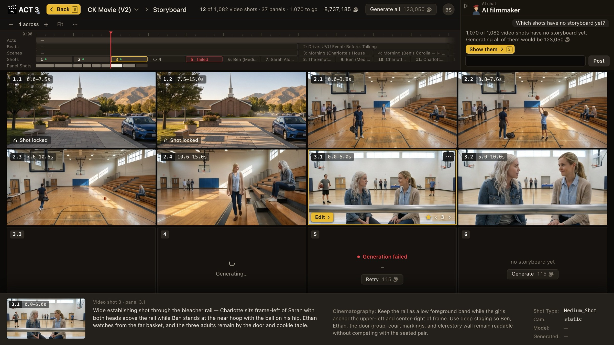

Step 5 of 7
Read it shot by shot
Each tile is one panel of one video shot; 3.1 means video shot 3, panel 1. Read the tiles left to right, top to bottom. Click a tile to select it.

Video shot 3, panel 1 Shots and Panel ShotsWhat you are looking at
The Storyboard is the whole film laid out as frames. Two numbers matter, and they are different:
- A video shot is a traditional shot: one generated video, often about 15 seconds. Video shot 3 is the third one in the film.
- A panel is a beat of action inside that video shot, with its own framing. A 15-second video shot may hold several panels. The tag 3.1 0.0–5.0s reads "video shot 3, panel 1, the first five seconds." A tag with no dot, like 4, is a video shot not yet split into panels.
The timeline across the top is the same one the Editor uses: Acts, Beats, Scenes, Shots and Panel Shots. Click a shot there, or use the Beat, Scene and Shot arrows in the top bar, to jump through a long film. The − and + buttons change how many tiles sit across the page.
What to look for, as a cinematographer
- Coverage. Does each scene open wide enough to show where everyone is, then move in for the moments that matter?
- Screen direction and eyelines. Two people talking should face each other across the cut, frame-left and frame-right, panel to panel.
- Continuity. Same set, same wardrobe, same time of day from panel to panel.
- The action. Select a tile and read the strip at the bottom: what the panel shows and the cinematography note behind it.
A Shot locked badge means that video shot is protected from changes until someone unlocks it.
Where you go next
When a frame is wrong, you fix just that frame. That is the next step.